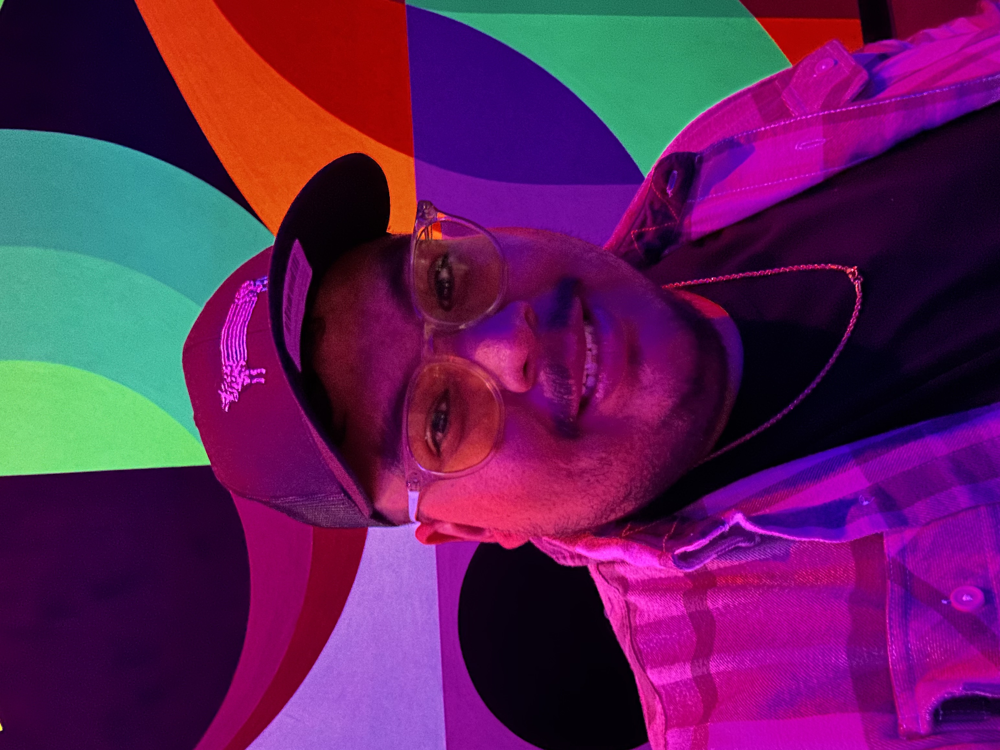

Jozhua Martinez

Summary
Digital Marketing Strategist from Texas, skilled in multimedia content creation and strategy. Passionate about enhancing digital narratives, exploring Austin’s culture, and engaging with the community through photography and film.
Education
Associates of Science, Radio, Television & Film Production
- Austin Community College 2018
Bachelor of Science, Digital Media Innovation
- Texas State Unversity 2020
Work History
Digital Marketing Strategist - Motiliti Inc
July 2021 - Present
- Responsible for optimizing websites for search engines in order to improve the visibility and rankings of the website.
- Works closely with the client to understand their business goals and develop a customized strategy to achieve those goals.
- In addition to technical SEO skills, implement strong communication and project management skills to effectively collaborate with clients and team members.
Marketing Coordinator - Tyler's
May 2020 - July 2021
- Responsible for designing and executing print marketing campaigns that promote their products and services.
- Coordination with print vendors to ensure cost-effective and timely production.
- Worked closely with the company's marketing and sales teams to determine their goals and create a plan for achieving them.
Skills
- Web Design
- Digital Marketing
- SEO
- Paid Ads
- Conversion Rate Optimization
- Ui/Ux Design
- Graphic Design
Certifications
- Advanced Social Media Strategy Training and Certification
Hubspot Issued 2020
- Advanced Social Media Strategy Training and Certification
Hootsuite Issued 2020
Get To Know Me
MY HOBBIES
CONTACT ME